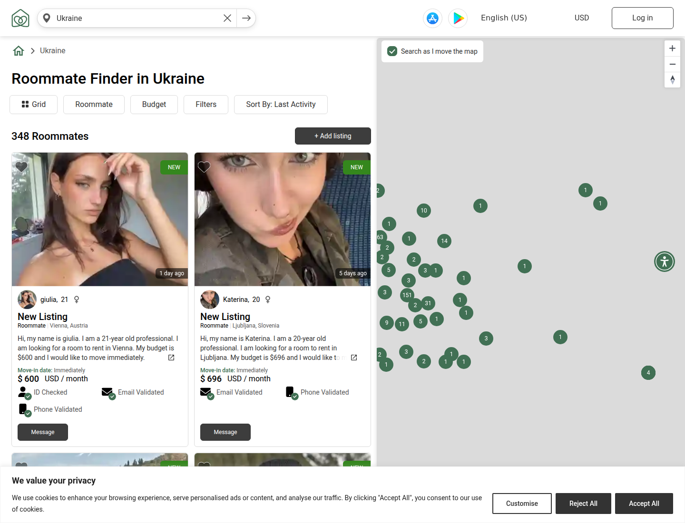
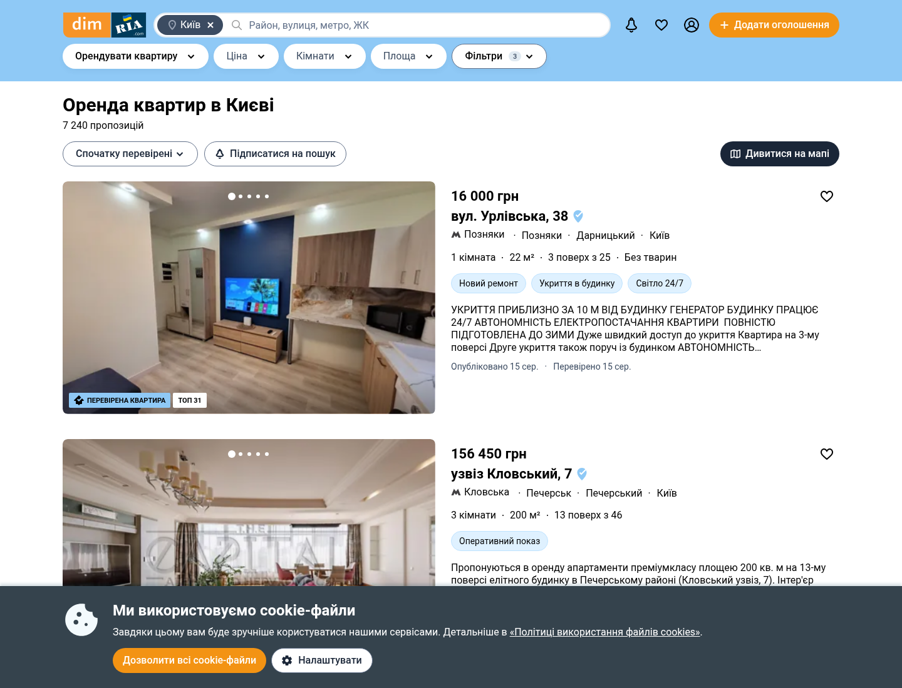
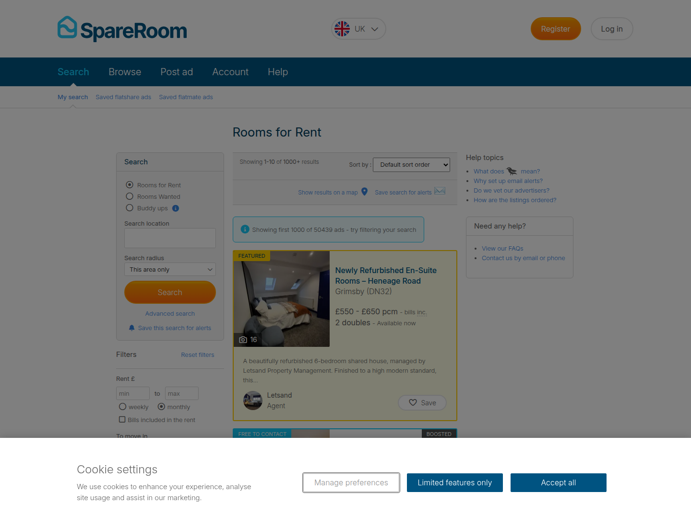
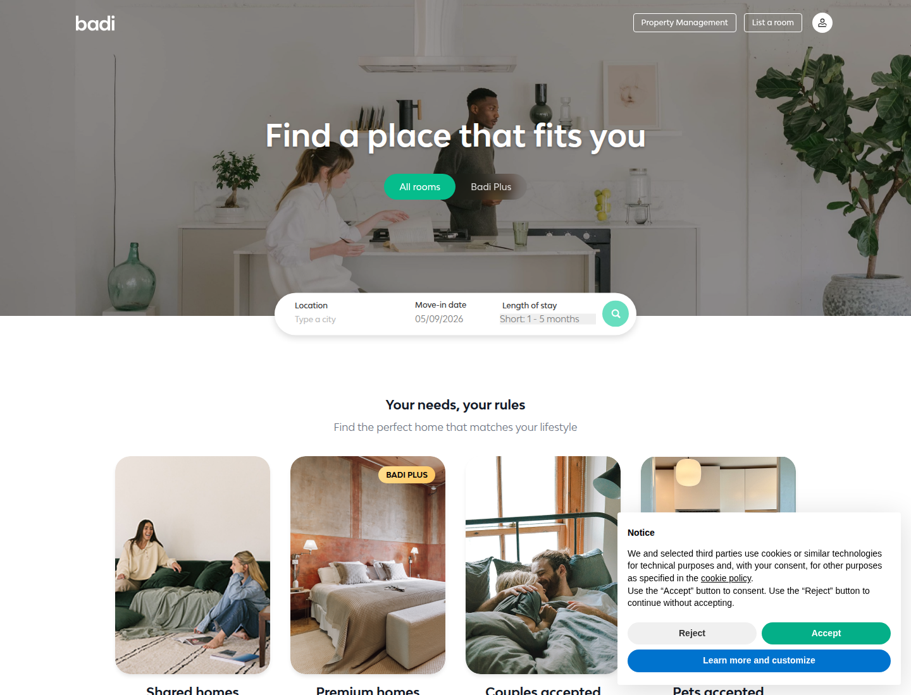
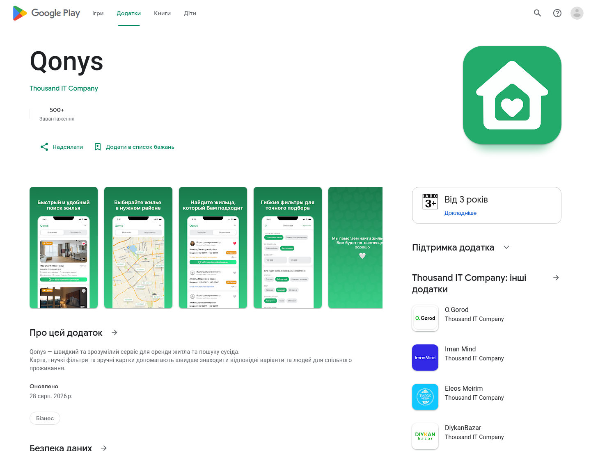

Урок 01 із 12 · Ресерч і бенчмарк
Урок 1. Ресерч і бенчмарк
Конкурентний ландшафт, бенчмарк довіри й патерни ринку — перша зовнішня перевірка припущень продуктового брифу. Повторно перевірено 2026-09-02; живі інтерв'ю ще не проведено.
Коротко
Що ресерч уже змінив у продуктовому рішенні. Цей блок дає суть уроку за одну хвилину.
Що побачили
- Телефонний код підтверджує контроль номера, а не особу.
- Репутація працює лише тоді, коли прив'язана до підтвердженої події.
- Direct chat без safety controls створює ризик спаму й небажаного контакту.
Що вирішили
- Залишити browse → profile → direct chat як робочий core loop.
- Додати report, block і базову модерацію до MVP.
- Selfie/ID та post-stay ratings не запускати без окремого discovery.
Конкуренти
Три групи, разом 14 продуктів: 3 хард (той самий продукт, той самий Київ), 5 софт (інший продукт, та сама базова задача), 6 аспіраційних (міжнародні еталони категорії). Клітинки й формулювання синхронізовано з research.md, де є джерела.
| Компанія | Група | Аудиторія | Основа продукту | Ключовий механізм | Довіра | Монетизація |
|---|---|---|---|---|---|---|
| OLX.ua («Підселення») | хард | Масовий укр. користувач будь-якого віку, не сегментовано під роуммейтів | Класифайд-дошка | Пошук + фільтри (ціна, район, комісія), сортування | Не вдалося перевірити | Freemium: безкоштовне розміщення + платні «Топ»/«VIP» пакети |
| Qonys | аспіраційні | Розробник із Казахстану; 500+ завантажень, присутність у Києві не підтверджено | Мобільний застосунок | Карта + фільтри + картки для підбору людей/варіантів | Не вдалося перевірити | Не вдалося перевірити |
| Roomster | хард | Повнолітні шукачі кімнат і співмешканців; точний вік не підтверджено | Веб + застосунок, профіль-орієнтований | Фільтри бюджет/дата/локація, детальні профілі звичок | Телефон та email; ID і proof-of-residence доступні окремо | Paywall на комунікацію: $11.99/7 днів, $29.99/30 днів у поточних terms |
| FreeRentAds | хард | Не вдалося перевірити (403) | Ймовірно шаблонна міжнародна класифайд-мережа | Не вдалося перевірити | Не вдалося перевірити | Не вдалося перевірити |
| Facebook-групи | софт | Широка киянська аудиторія без бюджету на рієлтора | Соцмережевий фід (пости + коментарі) | Публікація → відгук у коментарях/директі → домовленість поза платформою | Практично відсутня; задокументовані шахрайства | Безкоштовно |
| LUN.ua | софт | Орендарі/покупці нерухомості, цілі квартири | Агрегатор оголошень нерухомості | Геофільтри (місто/район/метро) + карта | Мітка «без комісії»; формальної верифікації немає | Платна реклама/розміщення для девелоперів |
| DIM.RIA (DOM.RIA) | софт | Орендарі/покупці/продавці, професійні рієлтори | Верифікований агрегатор оголошень | Фільтри + інтерактивна карта | Виїзна перевірка інспекторами, 360° фото, «перевірені рієлтори» | Платні лістинги/підписки для агентів |
| Telegram-бот «Квартирант» | софт | Орендарі великих міст України | Чат-бот з передачею живому агенту | Фільтри → push нових об'єктів → запис у боті → супровід менеджера | Рейтинг 4,9/5 (неверифіковано) | Безкоштовно орендарю; комісія з орендодавця |
| Coliving ONE | софт | Молоді IT/фрілансери Києва | Оператор коливінгу (сам володіє й здає) | Пряме бронювання/waitlist у Telegram, співбесіда | 22-пунктові правила проживання, медіа як соцдоказ | Оренда 9000–17000 грн/міс + депозит |
| SpareRoom | аспіраційні | Шукачі кімнат, власники й потенційні співмешканці | Веб + застосунок | Каталог + «Buddy Ups» для спільного пошуку житла | Модерація оголошень заявлена сервісом; перевірку особи кожного профілю не підтверджено | База безкоштовна; Early Bird відкриває контакт із новими free ads, Bold Ads підвищує видимість |
| Badi | аспіраційні | Міські орендарі/лістери; масштаб — лише заява компанії | Веб + застосунок, маркетплейс кімнат | Пошук, запити, відеодзвінок і бронювання | «Trusted user» = підтверджений банківський рахунок лістера | Badi Plus для власників; актуальні умови перевіряти перед презентацією |
| Diggz | аспіраційні | Орендарі великих міст США | Веб + застосунок | Compatibility, likes/match та Instant Messages без mutual match | Verification/references заявлені сервісом | Core match/chat безкоштовні; Premium додає messages, filters і visibility |
| HousingAnywhere | аспіраційні | Студенти/експати; географічне охоплення — змінна заява компанії | Платформа безконтактної оренди | Оголошення, документообіг і платежі в платформі | Tenant Protection утримує перший платіж до заселення | Збір з орендаря; формулу перевіряти перед презентацією |
| Flatmates.com.au | аспіраційні | Орендарі/власники Австралії | Веб-маркетплейс | Модеровані оголошення, чат до розкриття контактів | Mobile verification заявлена сервісом; ефективність незалежно не оцінено | Не вдалося перевірити |
«Не вдалося перевірити» — сайт заблокував доступ (403/429) або не публікує ці дані; не вигадано замість цього.
Бенчмарк довіри
Вузький бенчмарк довіри до профілю до першого контакту на п'яти продуктах-еталонах поза категорією співмешканців — саме той момент прийняття рішення "чи писати цій людині", який спільна матриця конкурентів вище показала слабким по всьому ринку.
Порівняння без хибної точності
| Продукт | Що перевіряється | Що бачить інша сторона | Межа | Урок для Кутка |
|---|---|---|---|---|
| Airbnb | Trusted source, ID та інколи selfie | Точний identity badge | Не гарантує особу чи безпеку | Показувати результат, не сирий доказ |
| Turo | Eligibility і risk-сигнали перед транзакцією | Підсумковий статус | Залежить від транзакції та driver data | Не копіювати opaque score |
| Upwork | Identity та історія контрактів | Badge і Job Success Score | Репутацію живлять події платформи | Review потребує підтвердженої події |
| Опційно identity/workplace/education | Badge з типом перевірки | Не доводить характер чи сумісність | Називати точний сигнал | |
| Bumble | Photo verification; ID у підтримуваних сценаріях | Відповідний badge | Не доводить адресу, намір чи поведінку | Окремий шар, не заміна report/block |
Шкалу 1–5 видалено: без рубрики й ваг середнє створювало хибну точність.
Ключові знахідки по продуктах
Airbnb
Badge називає саме identity verification, а сирі ID/selfie не показуються іншим. Сервіс прямо пояснює межі сигналу.
Turo
Внутрішні risk-сигнали працюють у транзакційному контексті. Куток не має аналогічних подій і driver data.
Upwork
Репутація має основу в контрактах платформи. Без підтвердженої події rating легко сфальсифікувати.
Один badge розкриває конкретний тип перевірки. Це точніше, ніж універсальне слово «верифіковано».
Bumble
Photo/ID verification знижує окремі невизначеності, але не замінює block, report та модерацію поведінки.
Що перенести в MVP Кутка
- Підтверджений телефон із точним label. «Номер підтверджено» не обіцяє перевірку особи чи житла.
- Report, block і мінімальна черга модерації. Це safety floor для прямого чату без match-гейту.
- Показувати підсумок, не сирий доказ. Тип і дата сигналу видимі, чутливі матеріали — ні.
Не в MVP без окремого discovery
Live selfie, ID verification та Turo-подібний risk score. Вартість, точність, privacy-процес, ручна модерація та доступність провайдера в Україні тут не перевірені.
Патерни
Що повторюється й що відрізняється по всіх 14 конкурентах — не по окремому продукту, а по ринку загалом.
Три спільні патерни ринку
1. Trust-сигнал — вхідний квиток, не диференціатор
Структуровані продукти (Roomster, SpareRoom, Badi, Diggz, HousingAnywhere, DIM.RIA) показують хоча б один trust-сигнал, але це різні речі: телефон, email, ID, банківський рахунок, житло або модерація оголошення. Неструктуровані канали (OLX, FB-групи) не показують жодного. Підтверджений телефон у MVP Кутка — базовий anti-spam control, не доказ особи й не перевага.
2. Монетизація — paywall на комунікацію/видимість
Roomster (чат), Diggz (лайки), Badi Plus, OLX Топ/VIP — платять за доступ, а не комісію з факту заселення. Винятки монетизують бізнес-сторону (агентів, девелоперів), а не самих орендарів.
3. Підтверджена подія важливіша за review UI
Badi та інші платформи вже мають ratings. Відкрите питання Кутка: як підтвердити реальне співжиття без бронювання чи транзакції та не створити фальшиву репутацію.
Три відмінності
Хто платить
Орендодавець/агент (DIM.RIA, LUN, Telegram-бот, HousingAnywhere) — або орендар/шукач (Roomster, Diggz, Badi Plus) — або ніхто (OLX база, FB-групи, Куток зараз).
Глибина профілю й сумісності
Від нуля (OLX, FB-групи) до алгоритмічного lifestyle-matching (Diggz) — величезна різниця в тому, скільки продукт знає про людину до першого контакту.
Модель продукту
Маркетплейс-посередник (більшість) проти оператора нерухомості, що сам володіє й здає житло (Coliving ONE) — фундаментально різна відповідальність за безпеку й якість.
Висновки
Відкриті питання до PM і статус ресерчу відносно продуктового брифу.
Три відкриті питання до PM
- Чи Куток монетизує доступ до спілкування (paywall-модель, як у Roomster/Diggz/Badi), чи лишається повністю безкоштовним, як зараз зафіксовано в брифі — попри те, що це основна модель монетизації майже всієї категорії?
- Наскільки глибоко Куток інвестує в lifestyle-сумісність (рівень Diggz) проти простих фільтрів (рівень більшості конкурентів) — головний потенційний диференціатор, але й головне джерело складності UX/профілю?
- Чи бере Куток на себе будь-яку відповідальність за період «після заїзду» — рейтинги в брифі тепер лише discovery-кандидат, а страхування/повернення коштів/перевірка співжиття не закладені взагалі; ринок цю нішу майже не закриває, а вона напряму стосується головної цінності «довіра»?
Що ще перевірити
Інтерв'ю з ЦА (22–30, переїзд у Київ)
Наскільки вірне припущення "довіра — головний біль", чи стать/звички справді топові фільтри, чи станції метро зрозуміліший орієнтир, ніж райони.
Верифікація телефону як бар'єр
Наскільки реально знижує фейкові акаунти й наскільки відсіює легітимних користувачів (friction vs safety).
Живе тестування конкурентів
Qonys, FreeRentAds — не вдалося перевірити через доступ; потрібне пряме тестування продукту, а не тільки веб-пошук.
Статус
Конкурентний аналіз і бенчмарк довіри повторно перевірено 2026-09-02, без живих інтерв'ю й без прямого тестування частини продуктів. Висновки, підтверджені ресерчем, вже перенесено в CLAUDE.md (report/block/модерація в MVP, рейтинги — discovery), щоб тримати одне джерело правди. Повний текст із джерелами — у research.md; журнал реконструйованих кроків 03–06 — у prompt-runs.md; сирі скріншоти — у screens/.
П’ять конкурентів зблизька
Реальні публічні екрани, зафіксовані 2 вересня 2026 року в Chromium 1440×1100. Скрін є доказом конкретного спостереження, а не висновком сам по собі. Спроба зафіксувати LUN.ua впала на Cloudflare-перевірку, тому цей скрін як доказ не використовується (журнал скріншотів).
{kind=link}

{kind=link}

{kind=link}

{kind=link}

{kind=link}
